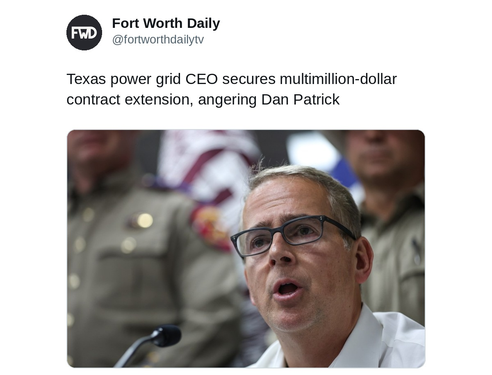

FWD
Fort Worth Daily
Just now · 🌎 · politics · template writer
Just now · 🌎 · politics · template writer
The ERCOT CEO’s extension deal was on hold for months after the lieutenant governor criticized the payouts. It was finalized weeks after Patrick lost reelection.

FWD
story + scoring
{
"source": "The Texas Tribune",
"kind": "rss",
"score": 0.6816,
"relevance": 2,
"url": "https://feeds.texastribune.org/link/16799/17536469/ercot-texas-electric-grid-ceo-contract",
"image_license": "republish-ok",
"image_credit": "Photo: The Texas Tribune"
}